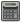

.
Alternatywą jest wybranie pozycji Arkusz
z menu Wstaw.
Spowoduje to uruchomienie kreatora.
.
Alternatywą jest wybranie pozycji Arkusz
z menu Wstaw.
Spowoduje to uruchomienie kreatora.
Zostaną krok po kroku przedstawione praktyczne przykłady użycia aplikacji JStat.
Przykład dotyczy obliczania modelu metodą najmniejszych kwadratów. Dane do modelu są rzeczywiste.
| Rok | Wynagrodzenie z pracy |
Zyski przedsiębiorstw |
Bilans handlowy |
Wydatki na artykuły trwałe |
Budownictwo |
Usługi konsumpcyjne |
| 1922 | 3700 | 1079 | 51 | 1620 | 532 | 2032 |
| 1923 | 4334 | 1134 | 25 | 1927 | 688 | 2229 |
| 1924 | 4332 | 1194 | 78 | 1864 | 759 | 2351 |
| 1925 | 4502 | 1250 | 36 | 2042 | 825 | 2434 |
| 1926 | 4802 | 1245 | 8 | 2136 | 881 | 2518 |
| 1927 | 4843 | 1262 | 42 | 2092 | 858 | 2580 |
| 1928 | 4936 | 1288 | 63 | 2137 | 818 | 2638 |
| 1929 | 5221 | 1338 | 35 | 2230 | 788 | 2716 |
| 1930 | 4777 | 1277 | 56 | 1828 | 594 | 2589 |
| 1931 | 4047 | 1121 | 9 | 1477 | 371 | 2338 |
| 1932 | 3170 | 975 | 16 | 1053 | 177 | 1970 |
| 1933 | 3005 | 902 | 22 | 1040 | 109 | 1767 |
| 1934 | 3489 | 910 | 35 | 1220 | 123 | 1819 |
| 1935 | 3793 | 952 | -27 | 1407 | 160 | 1928 |
| 1936 | 4248 | 1012 | -47 | 1654 | 255 | 2095 |
| 1937 | 4657 | 1123 | -26 | 1738 | 333 | 2242 |
| 1938 | 4323 | 1106 | 61 | 1440 | 293 | 2228 |
Jak widać, dane przedstawiają sześć różnych zmiennych po siedemnaście obserwacji.
Po uruchomieniu aplikacji
JStat zostanie automatycznie utworzony nowy dokument.
Należy dodać do niego stronę z arkuszem.
Z paska narzędziowego
należy wybrać ikonę
.
Alternatywą jest wybranie pozycji Arkusz
z menu Wstaw.
Spowoduje to uruchomienie kreatora.

|
Posługiwanie się kreatorem zostało omówione w rozdziale opisującym wszystkie moduły aplikacji. Należy utworzyć tyle zmiennych i przypadków, ile przedstawiają dane. Dodatkowo można stworzyć zmienną dla lat, ale nie powinno się jej włączać do późniejszego modelu. Dla ułatwienia sugeruje się wpisywać nazwy zmiennych.
W tym momencie można zapisać dokument, klikając ikonę
 na pasku narzędziowym
lub wybierając z głównego menu pozycję Plik, a następnie
Zapisz. Po zapisaniu,
zmieni się napis na belce tytułowej okna z dokumentem
na ścieżkę, gdzie dokument został zapisany.
Jednocześnie zniknie gwiazdka (*), która oznaczała, że dokument
został zmieniony od ostatniego zapisania.
na pasku narzędziowym
lub wybierając z głównego menu pozycję Plik, a następnie
Zapisz. Po zapisaniu,
zmieni się napis na belce tytułowej okna z dokumentem
na ścieżkę, gdzie dokument został zapisany.
Jednocześnie zniknie gwiazdka (*), która oznaczała, że dokument
został zmieniony od ostatniego zapisania.
Następnie arkusz trzeba uzupełnić danymi. Dane można przepisać lub po w dowolnej przeglądarce internetowej zaznaczyć i skopiować do schowka. Następnie należy zaznaczyć pierwszą komórkę (kliknięcie lewym przyciskiem myszy) i przywołać menu kontekstowe (kliknięcie prawym przyciskiem myszy). Należy wybrać pozycję Wklej.
Kolejną czynnością jest przeprowadzenie analizy regresji. Z menu głównego należy wybrać Obliczenia, następnie Regresja. Uruchomi się kreator. W pierwszym kroku można wybrać zmienną objaśnianą. W omawianym przykładzie jest to zmienna Wynagrodzenie z pracy.
Następnie w kolejnym kroku kreatora trzeba wybrać zmienne objaśniające. Należy odznaczyć zmienną Rok.
W kolejnych krokach można zostawić wartości domyślne lub można dostosować poziomy istotności przeprowadzanych testów. W ostatnim kroku uaktywni się przycisk , oznaczający, że wszystkie wymagane dane zostały zebrane i można przystąpić do obliczeń. Po naciśnięciu tego przycisku i odczekaniu chwili, podczas której wyświetlane jest okno informujące o postępie obliczeń, w dokumencie zostanie utworzona nowa strona Regresja.
Pod nagłówkiem Dobór zmiennych metodą analizy współczynników korelacji w polu "wynik testu" nie jest taki sam jak w polu Dobór zmiennych metodą wskaźników pojemności informacji. Oznacza to, że dwa różne sposoby doboru zmiennych do modelu wskazały różne zmienne. Od przeprowadzającego analizę statystyczną zależy dalsze postępowanie. W przykładzie zostanie obliczony jeszcze raz model z dwiema zmiennymi objaśniającymi. Najpierw trzeba się przełączyć na widok arkusza, w tym celu należy zaznaczyć na liście stron dokumentu stronę oznaczoną Arkusz danych [7 zm.]. Następnie trzeba powtórzyć całą procedurę, lecz w drugim kroku kreatora wybrać tylko dwie zmienne.
Po przeprowadzeniu obliczeń, zostanie utworzona kolejna (trzecia) strona dokumentu, z wynikami dla drugiego modelu.
Zrzut ekranu przedstawia fragment obliczeń z testami istotności parametrów strukturalnych. Jak widać, testy wypadły pomyślnie, czyli parametry są istotne (poza wyrazem wolnym). Test istotności współczynnika korelacji również wypada pozytywnie (nie został przedstawiony na zrzucie).
Załóżmy, że potrzebujemy odczytać wartości z tablic F-Snedecora dla
5 i 10 stopni swobody oraz poziomu istotności 0,1.
W pierwszym etapie warto przyjrzeć się wykresowi rozkładu.
Najpierw należy dodać stronę do dokumentu pozwalającą
rysować wykresy. Można tego dokonać klikając na ikonę
 na pasku narzędziowym lub wybierając pozycję Wykres
z menu Wstaw.
Teraz należy wpisać odpowiedni wzór. Można w tym celu
skorzystać z edytora funkcji
(menu Narzędzia, pozycja Edytor funkcji).
Po odszukaniu na liście funkcji pozycji
na pasku narzędziowym lub wybierając pozycję Wykres
z menu Wstaw.
Teraz należy wpisać odpowiedni wzór. Można w tym celu
skorzystać z edytora funkcji
(menu Narzędzia, pozycja Edytor funkcji).
Po odszukaniu na liście funkcji pozycji SNEDECORA
i kliknięciu na niej, w centralnej części okna pojawi się pomoc,
wyświetlając wzór rozkładu i przykładowy wykres.
Poniżej przykładowego wykresu znajduje się pomoc dotycząca
parametrów. Pierwsze dwa oznaczają stopnie swobody,
a kolejny to wartość x, dla której ma zostać
odczytana wartość funkcji gęstości. Ponieważ celem jest narysowanie
wykresu, jako trzeci argument należy wpisać po prostu x.
Podczas rysowania, będzie on zastępowany kolejnymi wartościami
z osi OX.
Naciśnięcie przycisku oznaczonego jako Wstaw wyrażenie spowoduje wstawienie wyrażenia do pola pod wykresem. Zamknięcie okna nastąpi po naciśnięciu przycisku Zamknij. W celu potwierdzenia wyrażenia, należy nacisnąć ENTER na klawiaturze.
Wykres zostanie narysowany, lecz domyślne powiększenie utrudnia przyglądnięcie się funkcji. Używając lewego przycisku myszki do przesuwania oraz lewego przycisku myszki wraz z klawiszem CTRL do zmiany powiększenia (zgodnie ze wskazówkami opisanymi w rozdziale o modułach, podrozdziale o wykresie) należy dostosować widok. Po chwili zmagań z wykresem można uzyskać zadowalające powiększenie.

|
Rozkład F-Snedecora jest stablicowany w ten sposób, że odczytane
z tablic wartości odpowiadają polu pod ogonem wykresu.
Do odczytania dokładnej wartości należy wykorzystać
moduł kalkulator i funkcję
SNEDECORATAIL, zwracającą właśnie pole pod ogonem wykresu.
Dostęp do niego następuje po kliknięciu ikony

lub wybraniu pozycji Kalkulator z menu Wstaw.
Wpisanie wyrażenia może nastąpić za pomocą
edytora funkcji,
można też wpisać je ręcznie. Po potwierdzeniu wyrażenia
klawiszem ENTER, w środkowym polu zostanie wyświetlony
wynik: 2,5216407.
Warto zaznaczyć, że można wpisać dowolny poziom istotności.
W papierowych wersjach tablic rozkładu F-Snedecora
są najczęściej wartości tylko dla poziomu istotności
równego 0,05. Dzięki aplikacji JStat
możliwe jest odczytanie wartości dla dowolnego poziomu istotności
i dowolnych stopni swobody.
Na przedstawionych przykładach można się przekonać, że różne obliczenia w programie JStat przeprowadza się bardzo prosto. Dodatkowo ma się pełny wpływ na przeprowadzane testy, ponieważ można wybrać dowolny poziom istotności.